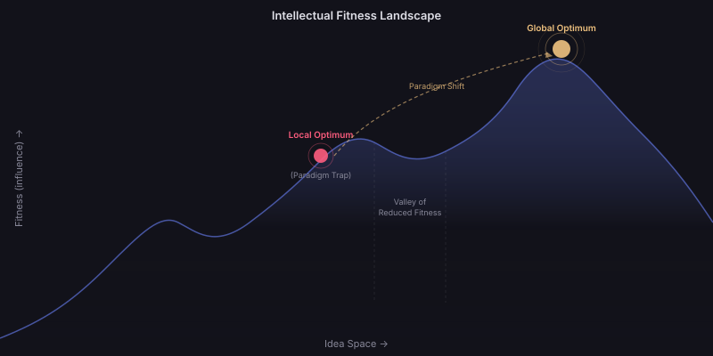
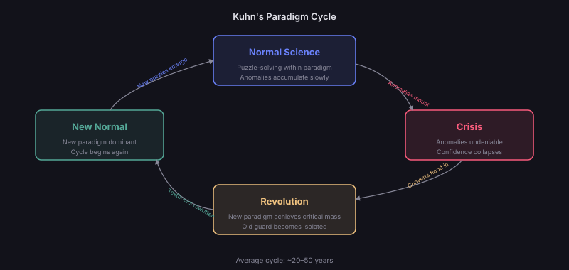

The Evolutionary Lens
Ideas exist in an ecology. They compete for finite resources — attention, funding, student hours, journal space, computational time. Like biological organisms, they face selection pressures that favour certain traits and eliminate others.
But unlike biological evolution, intellectual evolution operates through multiple selection mechanisms simultaneously. Ideas are selected by truth (empirical testing), by utility (practical application), by fashion (social dynamics), and by institutional power (funding and gatekeeping). These selection pressures often conflict.
The Darwinian Framework for Ideas
For evolution to occur, three conditions must be met:
Variation — new ideas must be generated continuously (mutation, recombination, invention).
Selection — some ideas must spread while others die (testing, adoption, citation).
Inheritance — successful ideas must be transmitted to new generations (teaching, publication, tradition).
All three conditions are satisfied in every knowledge system. Ideas evolve. The question is: what are they evolving toward?
Selection Environments
The Multiple Environments of Ideas
An idea's fitness depends critically on its environment. The same idea can thrive in one environment and die in another. Key selection environments include:
The Empirical Environment
Selection by Reality
In science and engineering, ideas ultimately face the test of empirical reality. Predictions are checked against observations. Theories that make wrong predictions are (eventually) abandoned.
But this selection is slow and imperfect. A theory can survive decades of anomalous data if no better alternative exists. Phlogiston theory persisted for a century despite accumulating problems. Continental drift was rejected for 50 years despite evidence.
Empirical selection is the harshest but slowest filter — and it only applies to ideas that make testable predictions.
The Social Environment
Selection by Prestige and Fashion
Ideas are also selected by social dynamics — the prestige of their advocates, alignment with current intellectual fashion, and compatibility with existing power structures.
This creates "fitness landscapes" that shift over time. An idea perfectly adapted to the social environment of 1970s psychology (behaviourism) became unfit when the environment shifted (cognitive revolution of the 1980s).
Social selection is fast but fickle — and can drive ideas toward or away from truth depending on whether prestige correlates with accuracy.
The Technological Environment
Selection by Feasibility
Many ideas are "correct" long before they are feasible. Neural networks were mathematically sound in the 1960s but computationally infeasible until GPUs in the 2010s. Genetic engineering was conceptually clear decades before CRISPR made it practical.
Technology creates fitness windows — periods when an idea suddenly becomes viable. Ideas that arrive during their fitness window flourish; those that arrive too early hibernate or die, waiting for technology to catch up.
Ideas are like seeds in a climate. A tropical seed (idea suited to a specific technological environment) dropped in ice (era without the enabling technology) will not grow — but it doesn't become wrong. If the climate shifts (technology advances), the same seed can suddenly flourish. The idea of "a computer in every pocket" was absurd in 1975, obvious in 2010, and outdated by 2020. The idea didn't change — its environment did.

The Intellectual Fitness Landscape
Ideas climb toward fitness peaks — but can get trapped on local optima (paradigm traps). The pink dot represents a field stuck in a "good enough" framework. The gold dot represents the global optimum — reachable only through a paradigm shift that temporarily reduces fitness (crossing the valley). This is why revolutionary ideas initially meet resistance.
Paradigm Shifts: Mass Extinctions
Thomas Kuhn's Structure of Scientific Revolutions (1962)
Kuhn's key insight: science does not progress smoothly. It alternates between periods of "normal science" (working within an accepted paradigm) and sudden "revolutions" where the dominant paradigm is overthrown.
During normal science, the paradigm acts as a fitness landscape — ideas that fit within it are selected for; ideas that challenge it are selected against. Anomalies accumulate but are explained away or ignored.
When anomalies reach a critical threshold, the paradigm enters crisis. The fitness landscape suddenly inverts — previously unfit ideas (alternatives to the paradigm) become viable, and the old paradigm's defenders find their ideas suddenly unfit.

Kuhn's Paradigm Cycle
The four phases of intellectual revolution. Average cycle: 20–50 years. During Normal Science, the dominant paradigm suppresses alternatives. Crisis opens space for new ideas. Revolution occurs when a critical mass converts. Then the new paradigm becomes Normal — and the cycle repeats.
Paradigm shifts are the intellectual equivalent of asteroid impacts. For millions of years, dinosaurs (the dominant paradigm) are supremely adapted — nothing can compete. Then the environment changes suddenly (anomaly crisis), and organisms that were previously marginal (mammals/alternative ideas) suddenly find themselves in a world perfectly suited to their traits. The new world doesn't just tolerate them — it selects for them with the same intensity that previously selected against them.
Niche Construction
Ideas That Build Their Own Environment
In biology, some organisms don't just adapt to their environment — they modify it to suit themselves (beavers building dams, humans building cities). Ideas do the same through niche construction.
A sufficiently powerful idea creates institutions, journals, funding streams, and career paths that select for ideas compatible with it. Examples:
Neoclassical economics created economics departments, journals, hiring criteria, and central bank advisory roles that all select for ideas compatible with its assumptions.
Object-oriented programming created languages (Java, C++), curricula, design patterns, and interview practices that select for OOP-compatible thinking.
The scientific method itself created peer review, replication norms, and funding criteria that select for ideas that conform to its epistemology.
Niche-constructing ideas are extremely hard to displace because the environment itself has been reshaped to favour them.
Fitness Landscapes
Peaks, Valleys, and Local Optima
Sewall Wright's fitness landscape metaphor applies powerfully to ideas. Imagine a mountainous terrain where altitude represents "fitness" (success at spreading and persisting). Ideas evolve by climbing uphill — each modification that increases fitness is adopted.
The problem: local optima. An idea can reach the top of a small hill and become stuck — every modification makes it worse, even though a much higher peak exists elsewhere in the landscape. This is the paradigm trap.
Escaping local optima requires:
Random mutation — occasionally trying modifications that temporarily reduce fitness.
Environmental change — when the landscape shifts, old peaks collapse and new ones emerge.
Recombination — combining elements from distant ideas can "jump" to a new peak.
Extinction and Revival
Ideas That Die and Return
Unlike biological extinction, idea extinction is rarely permanent. "Dead" ideas can be revived when environments change. Notable examples:
Neural networks: Proposed in 1943, mainstream briefly in 1960s, "extinct" during AI winters (1970s-2000s), dominant today. The idea was always correct — it was waiting for its fitness window.
Continental drift: Proposed by Wegener in 1912, rejected and "extinct" for 50 years, revived as plate tectonics in the 1960s when seafloor spreading evidence emerged.
Atomism: Proposed by Democritus (~400 BCE), dormant for two millennia, revived by Dalton in 1803 and confirmed in the 20th century.
The longest-hibernating ideas — those that waited centuries for their fitness window — are often among the most fundamental. Their truth was timeless; only their environment was unready.
Predator-Prey Dynamics
Ideas in Ecological Competition
Ideas interact ecologically. Some are predators (ideas that feed on others: criticism, debunking, meta-analyses). Some are prey (vulnerable primary claims). Some are symbionts (ideas that reinforce each other: the memeplex).
Competitive exclusion: Two ideas occupying the same niche cannot coexist indefinitely — one will displace the other. (Lamarckism vs. Darwinism; Steady State vs. Big Bang)
Predator-prey cycles: Dominant ideas generate their own critics. As criticism mounts, the idea weakens. If criticism succeeds, it eventually runs out of prey and itself declines, sometimes allowing the original idea to return in modified form.
Symbiosis: Some ideas cannot survive alone but thrive in pairs (democracy + capitalism; quantum mechanics + the standard model; agile + DevOps).
Artificial Selection of Ideas
Institutions as Breeders
Just as humans artificially select organisms (breeding dogs, crops, livestock), institutions artificially select ideas. Funding agencies, journal editors, hiring committees, and algorithm designers act as breeders — choosing which ideas reproduce and which are culled.
The question is whether artificial selection drives ideas toward truth, utility, or merely institutional compatibility. Evidence suggests all three — but the proportions depend on the institution.
Peer review selects for methodological rigour (truth-adjacent) but also for conformity with reviewers' existing beliefs.
Venture capital selects for market viability (utility) but also for narrative appeal and founder charisma.
Social media algorithms select for engagement (which correlates with emotional intensity, not truth).
AI as Fitness Landscape Designer
If AI systems increasingly determine which ideas surface (through recommendation algorithms, search ranking, and automated peer review), they become the primary shapers of the intellectual fitness landscape.
This creates an unprecedented situation: the fitness landscape for ideas would be designed rather than emergent. We could, in principle, engineer selection pressures that favour truth and compression power over engagement and emotional appeal.
Or — if designed poorly — AI could create fitness landscapes that select for whatever the AI's training optimised for, potentially creating evolutionary pressures that no human intended or controls.
The design of AI-mediated selection pressures for ideas is a live research question with enormous stakes. Current recommendation systems demonstrably select for engagement over truth. Whether we can reverse this without destroying the system's value remains unclear.
Open Questions
- Can we identify ideas currently in "hibernation" — correct but waiting for their fitness window — and accelerate their revival?
- Is there a predictable cadence to paradigm shifts, or are they inherently random (like asteroid impacts)?
- How do we design institutions that select for truth without also selecting for conformity?
- Can intellectual evolution escape local optima faster if we deliberately maintain "biodiversity" of ideas — even unpopular ones?
- What happens when AI generates ideas faster than selection can evaluate them — does the evolutionary process break down?